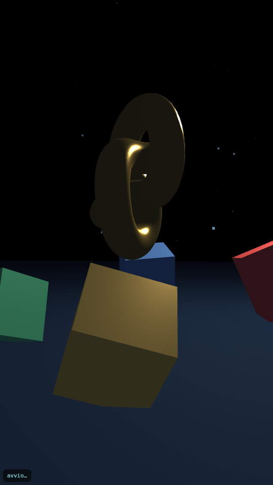
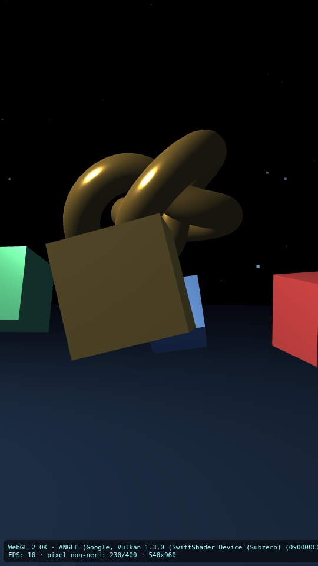

Report test WebGL — demo-scena (540x960 · 28/10/2026, 13:05:14)
⚠️ Rendering: SOFTWARE (SwiftShader su CPU) — velocità NON rappresentative della GPU del giocatore
Automatici
- WebGL1 disponibile — WebGL 1.0 (OpenGL ES 2.0 Chromium)
- WebGL2 disponibile — WebGL 2.0 (OpenGL ES 3.0 Chromium)
- Renderer effettivo — ANGLE (Google, Vulkan 1.3.0 (SwiftShader Device (Subzero) (0x0000C0DE)), SwiftShader driver) · rendering SOFTWARE (SwiftShader su CPU)
- Canvas presente — 540x960 (css 540x960)
- Oggetti si muovono (2 screenshot a 2,5s di distanza) — pixel diversi: 21.14% → la scena è animata
- 03 visibile: canvas
Verifica visiva (agente/umano guarda le immagini)
- 00-movimento-a.png / 00-movimento-b.png — VERIFICA VISIVA AGENTE/UMANO: guardare le immagini e confermare gli oggetti 3D.
- 02-scena.png — VERIFICA VISIVA: guardare l'immagine.
Non eseguiti / da tarare
Errori console (1)
- console: Failed to load resource: the server responded with a status of 404 (File not found)
Elementi fuori schermo (0)
Screenshot
00-movimento-a.png

00-movimento-b.png
